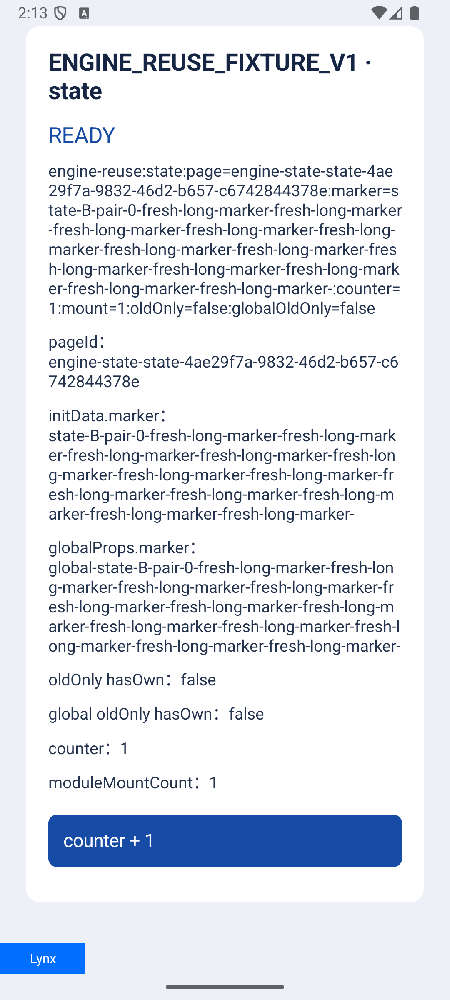
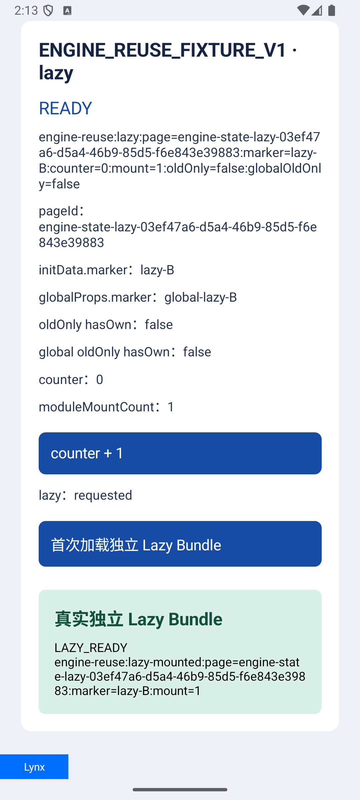
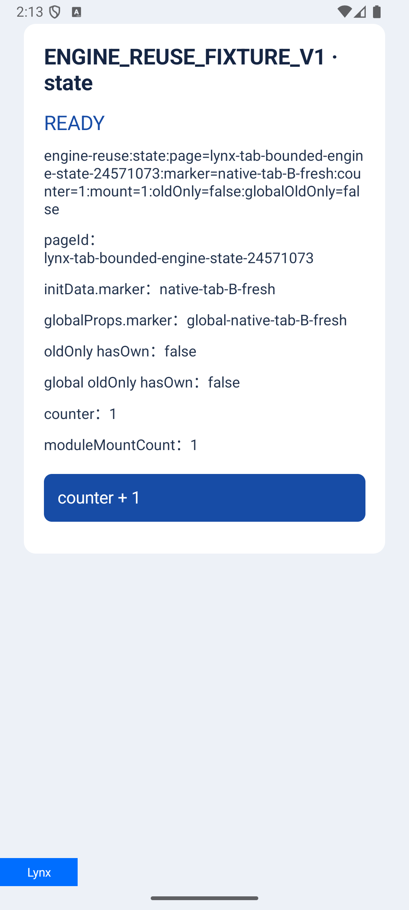

Android / Lynx 4.1.0 / ReactLynx 0.123.3
Android Engine 复用实测报告
结论：当前已开启官方 Engine 缓存，并通过功能、真实原生页面、构建和限定场景的堆检查。
每个真实 Engine 最多借给一个新页面。A 归还后允许一次 B warm reuse；B 退出后释放 Group，Engine pointer 归零；C/D 组成新的 Engine pair。
11有界 Engine 复用功能项 PASS / 55.18s
1真实首页原生路由自动回归 PASS / 6.001s
1严格 Heap 项 PASS / 15.105s
复用模型
冷页 A真实 SDK 首屏，未失败且满足资格；Engine A 进入空闲缓存。
→
暖页 B一次性借用；创建独立 View、TemplateData、globalProps；验证真实 root、文字、几何和 frame。
→
B destroy解绑资源、移除 listener、detach body、清理公开持有者、释放 Group；pointer 为 0。
→
新页 C / DC 新建 Engine；D 可复用 C 一次。
官方背景：Lynx 3.8 的 LynxViewGroup 引擎复用说明 描述了同一 template bundle 在多个 LynxView 间复用 Engine 的能力。
最终验证结果
| 验证层 | 结果 | 证据 |
|---|---|---|
| 有界 Engine 复用功能 | 11 项 PASS，55.18s | bounded-host-final-11.log |
| 真实首页原生路由自动回归 | 首页按钮 → Native LynxShellActivity → Back；A/B 同 Engine，C 新 Engine；PASS，6.001s | manual-native-page-instrumentation-2.log |
| 严格 Heap | PASS，15.105s；0 application leaks、0 library leaks、0 unreachable objects | bounded-host-helper-fix-heap.log |
| JVM | 146 total，143 pass，3 external skips，0 fail | 最终 JVM 汇总 |
| 构建 | Debug APK 与 Release AAR PASS | bounded-host-final-build.log |
功能覆盖
| 覆盖项 | 已验证事实 |
|---|---|
| Bundle 尺寸 | Small 88,114 bytes；Large 3,234,076 bytes；Async 94,510 bytes + 10 个真实 JS async 场景。 |
| A/B 状态 | 10 页、5 对 A/B；counter、marker、globalProps、oldOnly、当前 root 几何均正确；A/B 每次点击后 counter 为 1。 |
| 数据与 props | 新 TemplateData/globalProps、长 marker、字段省略和 fresh state 均通过。 |
| Lazy | 真实 native fetch，B lazy mount 成功；实际 lazy bundle SHA 前缀为 6a450801。 |
| 资源与 lease | A lease close、B owner/resource 归属、Group release 和 pointer 归零通过。 |
| 并发与 trim | 同一 Activity 两个 active View 使用独立 Engine；trim 后 idle lease 清除，下一次使用 fresh Engine。 |
| 失败边界 | 设备验证了首帧前取消与业务重载后拒绝捐赠；重复主加载与未知组件资格门禁通过静态复核，未单独运行负例。 |
| Static / native page | 纯静态页面的真实缓存帧通过；Native Tab 验证 A/B 状态、触控与健康；首页路由另验证 Back 和 C 新建。 |
实现：LynxTemplateGroupCache.kt；详细源码和先行测试链接见同目录 Markdown 报告。
真实性能与内存边界
| Bundle | 大小 | SHA 前缀 |
|---|---|---|
| Small | 88,114 bytes | bd55248f... |
| Large | 3,234,076 bytes | 3554ab41... |
| Async | 94,510 bytes | 374ddaf3... |
最新 10 个 Small 样本中，冷页中位数 为 141.724 ms，复用页中位数 为 192.469 ms。计时包含调度和轮询，不是 p95，也不是单纯点击延迟，因此不能据此宣称 复用页一定更快。确定收益是少一次 native Engine 构建和主包再次读取/解析；真实业务整体首帧仍需同口径基准。
Ready PSS 为 196,078–199,766 KiB，B 退出后为 187,350–196,261 KiB。波动非单调，只作为 observation。
严格 Heap 的 3 秒 + 3 次 GC 观测中，同一个空闲 Engine 的指针仍非零，旧 Activity 弱引用已清空；这不是 native pointer 瞬时归零证明。较早的 8 次 GC 检查没有在限定窗口内结论，queue drain 后 HPROF/LeakCanary 为 destroyed host 0、application leaks 0。本报告不宣称所有 SDK/native 对象都无泄漏。
资格与限制
- 资格 key 包含 app、bundle、release、SHA、source、selection、identity epoch、资源 snapshot、URL、屏幕/preset 尺寸、density、theme、locale 和 fontScale。
candidate_trial不捐赠 Engine；缺少 Release、SHA、身份代际或资源快照时也不进入缓存。- 最多 2 个 idle entry、8 MiB encoded weight、60 秒 TTL；这是宿主 encoded weight 约束，不是 native Engine 硬内存上限。
- 每个 Engine 最多借用一次；业务 reload、重复主 load、候选页、未知 native element 或无法证明脱绑的节点走 fresh 或拒绝捐赠。
- list、list-item、list-container、frame、Map、Video 等完整脱绑未证明；iOS/HarmonyOS 本轮未改。
历史 readonly-v2 只用于诊断收集，不是 UI 验收；normal B pixels A、reload B pixels B、C WaitingNative 等历史结果保留为背景，没有被用来放宽本轮边界。当前报告也不把 firstScreenSync、旧 accessibility getter 或私有版本门禁写成已证实根因。
视觉证据



证据索引
- bounded-host-final-11.log
- manual-native-page-instrumentation-2.log
- bounded-host-helper-fix-heap.log
- bounded-host-final-heap-analysis.txt
- bounded-host-final-heap-results.json
- 历史 TEST_REPORT.md
原始 grouped JSON：/tmp/codex-engine-reuse-20261010/android-group-cache/device-evidence/bounded/files/bounded-engine-smoke-results/grouped/。